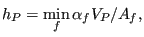
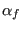
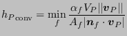

Next: Iterative procedure Up: Convergence considerations Previous: Convergence considerations Contents
Although the scheme has basic implicit characteristics (the solution is found at all element centers simultaneously by solving a system of equations) it is in fact not implicit in the sense that:
Therefore, the procedure is not unconditionally stable. In fact, it is advised to use the same bounds on the increment length as in an explicit procedure, i.e.
The first term in brackets is due to convection and represents the time for the fluid needed to transverse an element. The second term is due to the mechanical diffusion, the last term due to thermal diffusion. The diffusion coefficients are the sum of their laminar and turbulent counterparts.
To determine the height of a hexahedral element the minimum of the ratio of the volume to each of its facial surfaces is taken. Generalizing to other elements:
|  | (724) |
where  = 1 for hexahedral elements and triangular faces of wedge elements, 2 for quadrilateral faces of wedges and 3 for tetrahedral elements.
The value of h used for convective stability can be further increased by calculating h in the direction of the flow. This boils down to using:
|  | (725) |
For steady state calculations the time increment can be further increases by mass scaling. Indeed, steady state calculations are performed by running transient calculations till steady state. Since one is not interested in the intermediate results, one may increase the time step arbitrarily, provided convergence is not jeopardized. If in Equation (723) one of the diffusion terms is the limiting factor, one may increase this factor up to the level of the convective time step by increasing the density. This can be done on an element by element basis. The ensuing scaling factors are subsequently used in the transient terms of the conservation equations. Consequently, for steady state calculations the convective time step is the limiting factor.